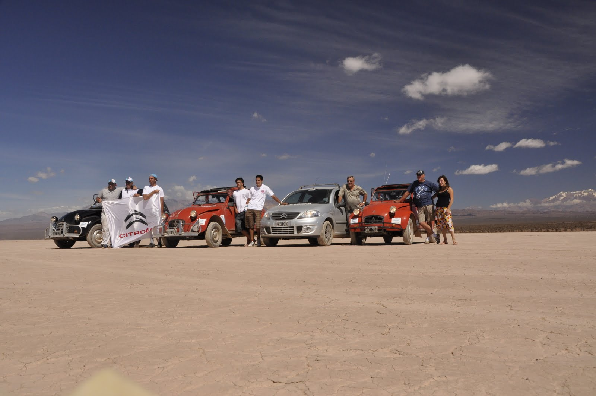
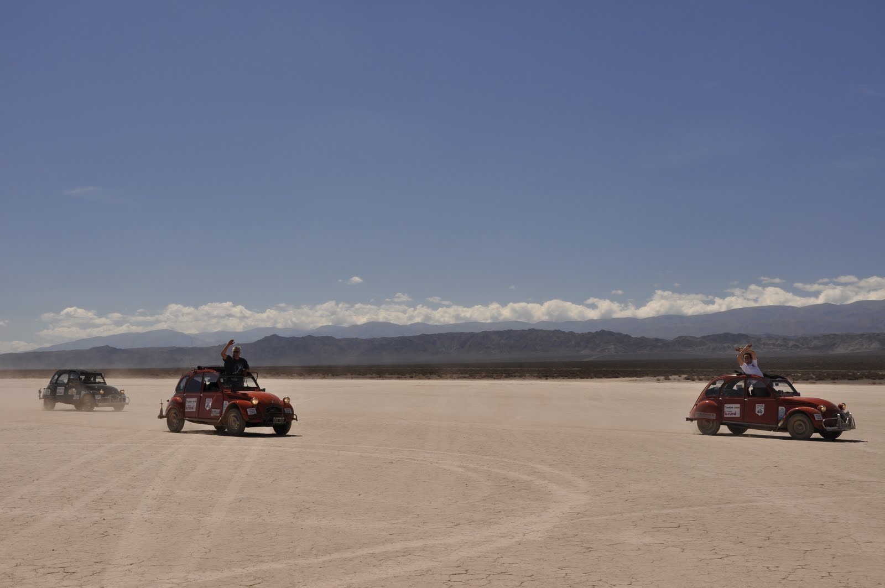

El despertar en el Hostel fue tardío, dada la hora de la madrugada que nos acostamos. Ese día se despedían de la travesía Noelia, Pedro y mi hermano Luis Felipe (Fepe). Debo manifestar que fue muy grato conocer a ese matrimonio. La buena predisposición de Noelia y el permanente buen humor de Pedro, fueron un condimento indispensable para esta parte de la etapa. Gracias nuevamente.
Esa mañana y para poner a punto a Mafalda, Fernando continuo con la docencia mecánica y le cambiamos el carburador y lo Avanzamos. Quedó "pipi cucu".
La partida del Hostel fue sin problemas, y emprendimos el camino hacia Pampa del Leoncito. Este lugar esta en el medio del Parque Nacional de igual nombre. Es un sitio ideal para la práctica del carrovelerismo, ya que es una planicie en donde la tierra es seca y no existe la mas mínima vegetación. El rugir de los motores de las Citronaves no se hizo esperar y salieron a levantar polvo. El C3 también hizo gala de los genes que lo proceden.
El camino a Mendoza en su primer tramo fue de ripio. En estas condiciones nuevamente los 3Cv mostraron su ductilidad y su condición de todo terreno.
La llegada a Mendoza estuvo plagada de muestras de apoyo. El alojamiento fue en la IV Brigada Aérea en donde nuestras Citronaves despertaron la curiosidad del personal militar de la base. Gracias Manoli por la gestión!!!!
Nota: después de ver el vídeo y como lo grabó....alguien puede creer que me explicó algo????!!!!
muy bueno el video!! francho sos todo un mecanico... ya podes ingresar a la general motors!! jajaja!!